| 日付 | 2020年12月29日（火） |
|---|---|
| 山域 | 道志山塊 |
| メンバー | 家族（妻、長女・9歳、長男・7歳） |
| 山行形態 | 子連れ日帰り |
| アクセス | 車 |
| ルート (Map) | 山伏峠 (8:51) - (9:35) 石割山分岐 - (10:17) 中ノ岳 - (11:19) 御正体山 (11:57) - (12:50) 中ノ岳 - (13:32) 石割山分岐 - (14:01) 山伏峠 |
自宅から日帰りで行ける有名山岳はほぼ行きつくした感があるが、
その中で唯一登っていなかったのが御正体山だ。
展望の乏しい山ではあるが、道志山塊の最高峰で
周囲から見ても目立つ立派な山だ。
今年は雪が少なくまだ高い山でも登れるため、
今年の登り納めに行ってみることにする。
山伏峠の路肩に車を停める。標高1100m。
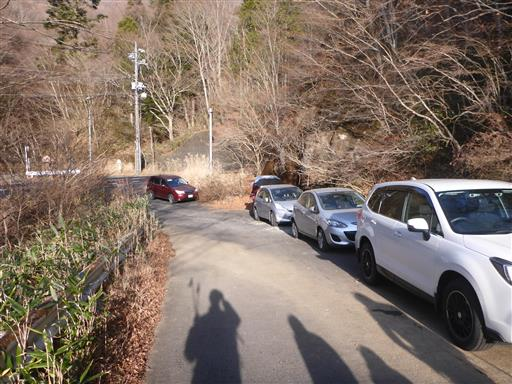
駐車スペースの側の鳥居から登山開始。
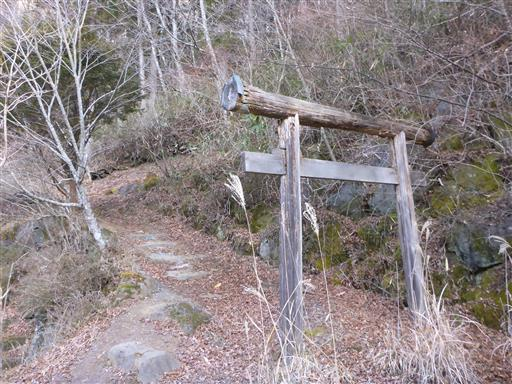
笹原広がる静かな登山道。
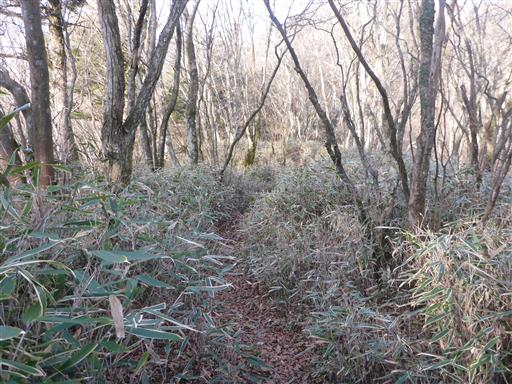
N字形の木。途中で一度幹が折れた後、再び上に向かって伸びたのだろう。
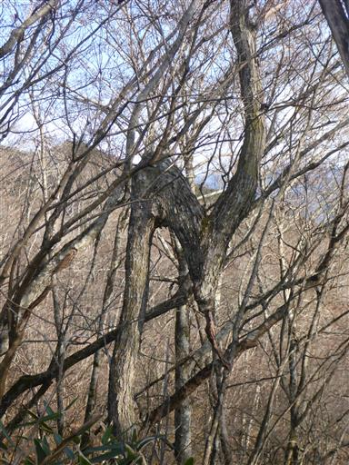
滑りやすい斜面。ロープが設置されている。
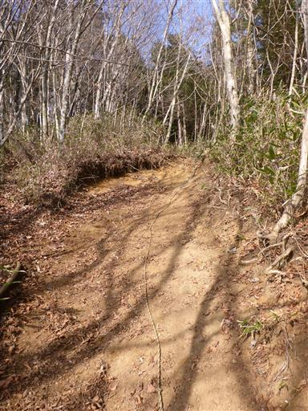
石割山との分岐点。ここに来て初めて御正体山と記載された標識を見つける。
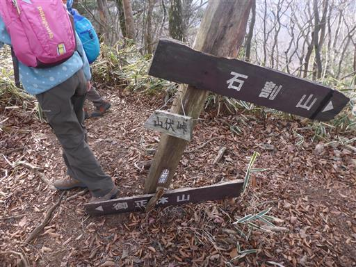
ここからはあまり傾斜のきつくない尾根道が続く。
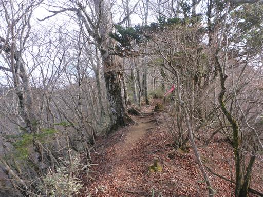
遠くに目指す御正体山の頭が見えている。
久々の登山で調子が出ないのか、息子はやる気を削がれている。
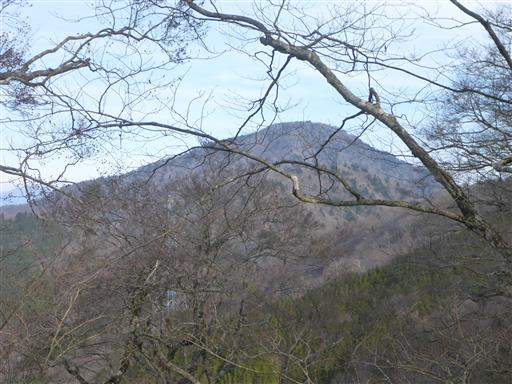
ブナ林が広がる美しい尾根道。
冬枯れの時期より新緑の春か、紅葉の秋が美しそうだ。
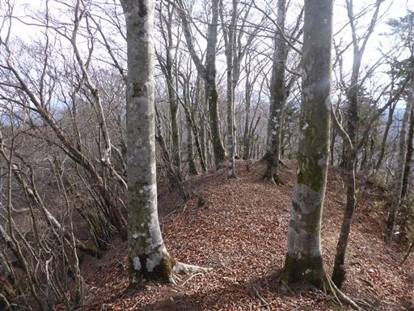
送電線鉄塔に到着。
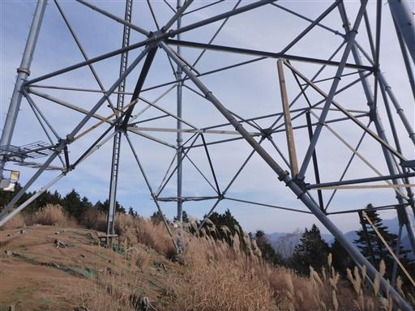
ここが唯一の展望ポイント。
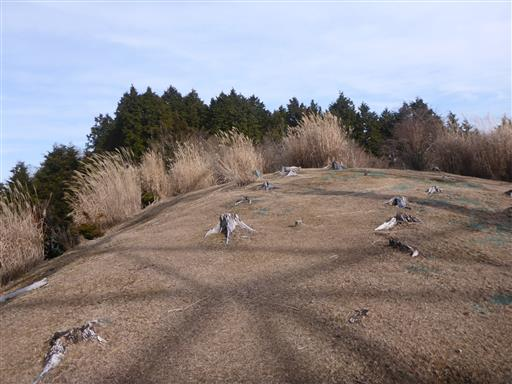
富士山がきれいに見える。
今年は富士山にあまり雪が降っておらず、あまり白く染まっていない。
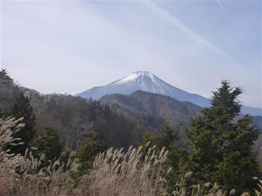
雲は多いが南アルプスの山々も見えている。
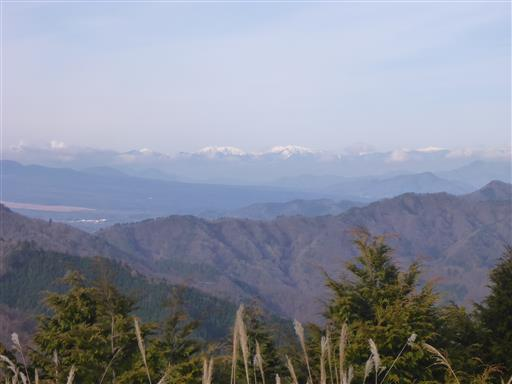
こちらは杓子山方面。

展望を満喫したら先に進む。笹と周囲の木々が美しい。
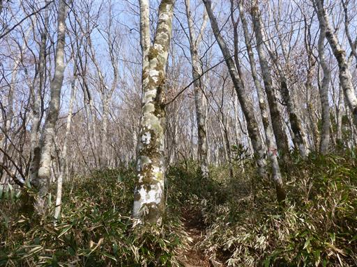
中ノ岳に到着。小さなピークをいくつか越えていく。
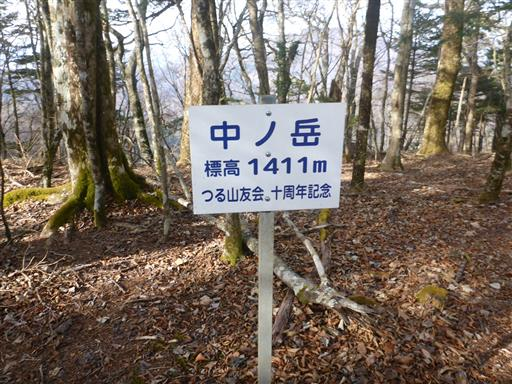
立派なブナの木。
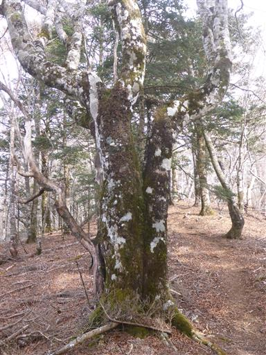
御正体山の山頂に到着する。標高1681m。
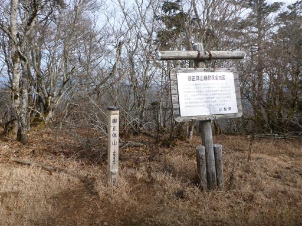
周囲は樹林に囲まれていて、冬でも全く展望はない。
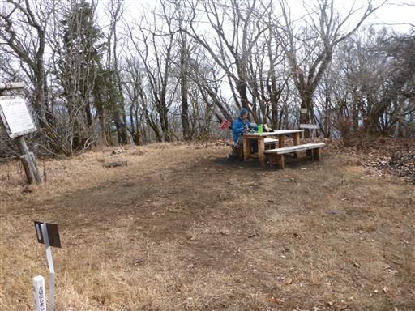
山頂には小さな社がある。
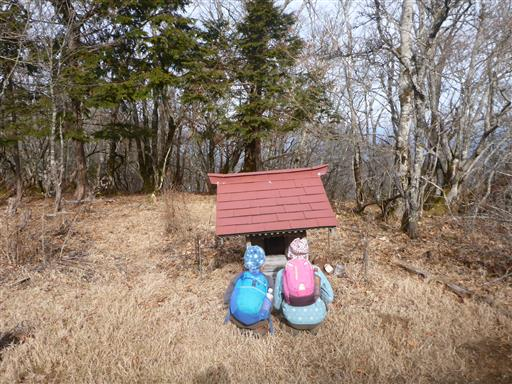
この辺りはやまなしの森林100選に選ばれているようだ。
確かに美しい樹林帯が広がる登山道だった。
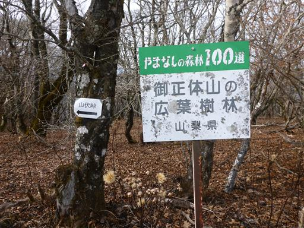
これはマルバダケブキの綿毛だろうか？葉も花も綿毛も巨大だ。
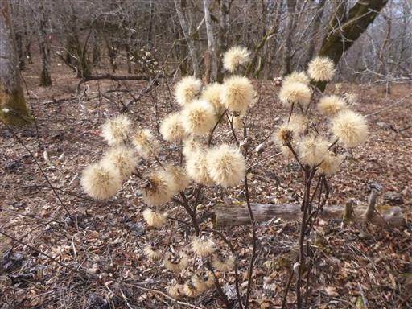
下山は元来た道を戻る。送電線鉄塔からはまだ富士山の姿が見える。
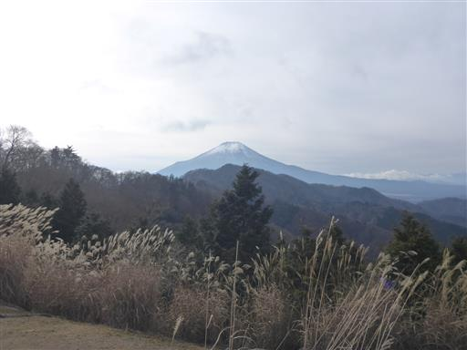
一方、御正体山は雲に覆われ始めている。
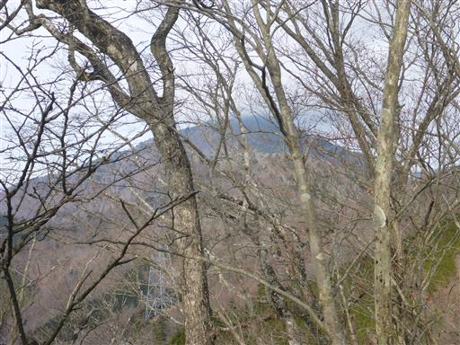
砂の斜面はロープに捕まって慎重に下る。
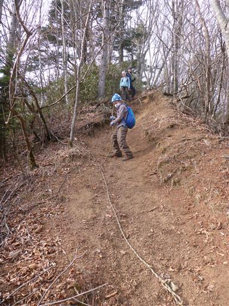
無事下山。
事前の予想通り地味な山ではあったが、樹林帯が美しく、
季節を変えてまた来たいと思える山だった。
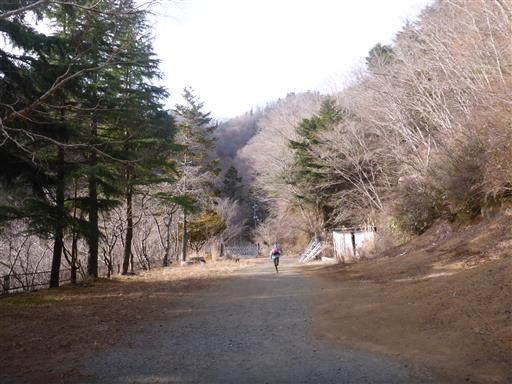